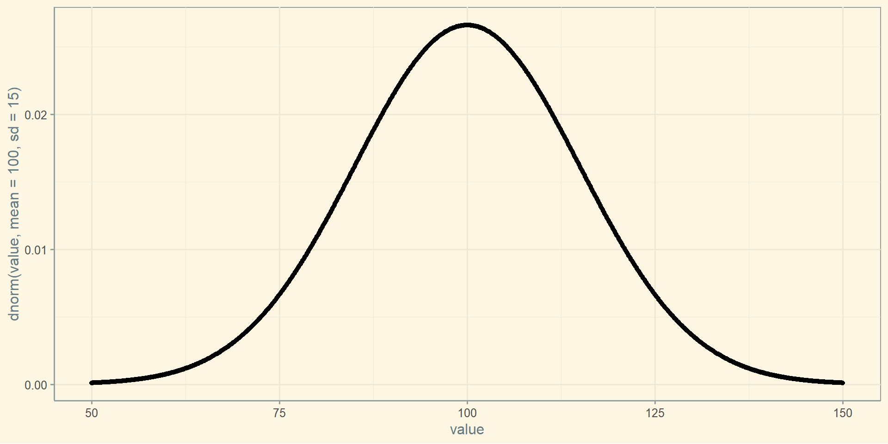
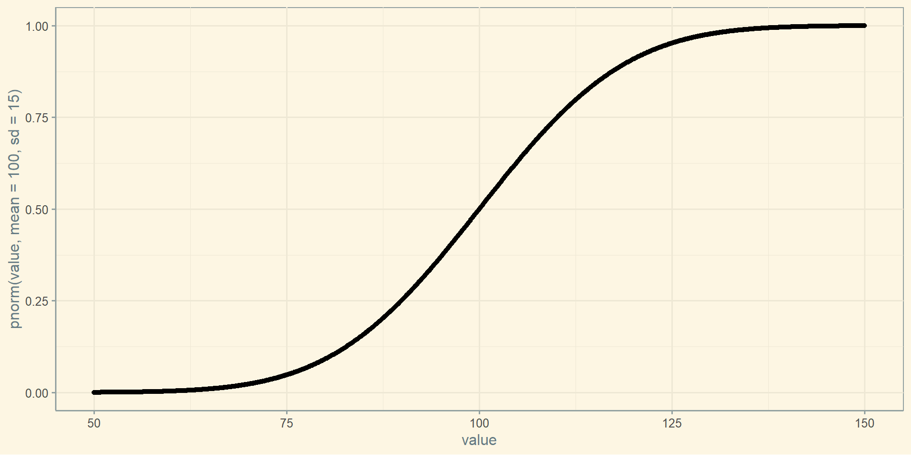

Неперервні (continuous) - дані, які можуть приймати будь-які числові значення
Дискретні (discrete) - дані, які приймають тільки цілочисельні значення
Категоріальні (categorical) - дані, які набувають тільки окремих значень.
Бінарні / двійкові (binary) - дані лише з двома категоріями
Порядкові - дані з вираженою впорядкованістю
Міри центральної тенденції
Міри центральної тенденції
Середнє арифметичне
Сума всіх значень, що поділено на їх кількість.
\[\overline{x}=\frac{\sum_{i}^{n}x_i}{n}\]
Усічене середнє значення
Різновид середнього, яке обчислюється шляхом відкидання фіксованого числа відсортованих значень з кожного кінця послідовності і потім взяття середнього арифметичного решти значень
Деякі значення більш мінливі ніж інші, і мінливим значенням надається більша вага. Наприклад, якщо один з датчиків менш точний, його вагу можна понизити.
Зібрані дані не однаково репрезентують різні групи. Наприклад, надати більшу вагу групі даних, яких представлено менше.
Медіана та робасті оцінки
Медіана - це число, ділить впорядковану множену значень навпіл.
Якщо число даних парне, серединним значенням є те, що не знаходиться в наборі даних фактично, а є середнім арифметичним двох значень, які ділять впорядковані дані на верхню і нижню половини.
Медіану називають робастою оцінкою центрального положення, оскільки вона стійка до викидів.
Викиди - це спостереження, які сильно відрізняються від інших даних.
Міри центральної тенденції
country
continent
year
lifeExp
pop
gdpPercap
Afghanistan
Asia
1952
28.801
8425333
779.4453
Afghanistan
Asia
1957
30.332
9240934
820.8530
Afghanistan
Asia
1962
31.997
10267083
853.1007
Afghanistan
Asia
1967
34.020
11537966
836.1971
Afghanistan
Asia
1972
36.088
13079460
739.9811
Afghanistan
Asia
1977
38.438
14880372
786.1134
Міри центральної тенденції
Розрахуємо середнє, зважене середнє, усічене середнє та медіану для ВВП:
gapminder %>%group_by(continent) %>%summarise('середнє'=mean(gdpPercap),'усічене середнє'=mean(gdpPercap, trim =0.1),'медіана'=median(gdpPercap)) %>% knitr::kable()
continent
середнє
усічене середнє
медіана
Africa
2193.755
1557.042
1192.138
Americas
7136.110
5823.602
5465.510
Asia
7902.150
4915.853
2646.787
Europe
14469.476
13532.972
12081.749
Oceania
18621.609
18059.966
17983.304
Міри центральної тенденції
Розрахуємо середньостатистичну кількість населення в країні, то повинні використовувати середнє зважене або медіану, щоб врахувати різну чисельність населення на кожному континенті.
gapminder %>%group_by(continent) %>%summarise('середнє'=mean(pop),'зважене середнє'=weighted.mean(pop, w = lifeExp),'медіана'=median(pop)) %>% knitr::kable()
continent
середнє
зважене середнє
медіана
Africa
9916003
10266549
4579311
Americas
24504795
26342188
6227510
Asia
77038722
78390133
14530831
Europe
17169765
17266114
8551125
Oceania
8874672
9013577
6403492
Мода
Значення ознаки, яке зустрічається максимально часто
Різниця між найбільшим і найменшим значеннями в наборі даних
\[Range = max(x_i)-min(x_i)\]
Оцінки варіації
Процентиль (percentile)
Для того щоб запобігти чутливість до викидів, можна звернутися до розмаху даних після відкидання значень з кожного кінця. Ці типи оцінок формально грунтуються на різниці між процентилями.
У наборі даних P-й процентиль є таким значенням, що P відсотків значень приймає це значення або менше і (100 - P) відсотків значень приймає це значення або більше.
Відноситься до практики упередженого підбору даних - свідомо чи несвідомо.
Таким чином, що вона призводить до оманливого або недовговічним висновку.
Нормальний розподіл
Нормальний розподіл
Унімодальний розподіл - розподіл, яке має тільки одну моду.
Нормальний розподіл - основний розподіл статистики. Його характерними рисами є унімодальність, симетричність, а також те, що відхилення спостережень від середнього підпорядковується ймовірнісному закону - законку нормального розподілу.
Стандартний нормальний розподіл - це такий розподіл, в якому одиниці на осі x виражені в стандартних відхиленнях від середнього.
Z-стандартизація - перетворення нормального розподілу, що дозволяє змістити математичне очікування в 0, а дисперсію зробити рівний 1. Таке перетворення корисно, коли ми хочемо з’ясувати який відсоток спостережень лежить вище або нижче певного значення. В такому випадку можна користуватися стандартними таблицями Z-стандартизації.
\[z_i = \frac{x_i - \overline{x}}{\sigma_x}\]
\(z_i\) - стандартизоване значення.
\(x_i\) - спостереження.
\(\sigma_x\) - вибіркове середнє.
Правило:
У діапазоні \(M_x \pm \sigma\) знаходиться приблизно 68% спостережень
У діапазоні \(M_x \pm 2\sigma\) знаходиться приблизно 95% спостережень
У діапазоні \(M_x \pm 3\sigma\) знаходиться приблизно 100% спостережень
iq <-seq(50,150, 0.1) %>%as_data_frame()ggplot(iq, aes(x = value, y =dnorm(value, mean =100, sd =15))) +geom_point()

Функція кумулятивної щільності розподілу
ggplot(iq, aes(x = value, y =pnorm(value, mean =100, sd =15))) +geom_point()

Функція кумулятивної щільності розподілу
Яка ймовірність того, що отримане випадкове значення IQ буде менше або дорівнює 100?
pnorm(100, mean =100, sd =15)
[1] 0.5
Менше або дорівнює 130:
pnorm(130, mean =100, sd =15)
[1] 0.9772499
Квантильна функція
Квантильна функція повертає значення, яке по заданій ймовірності випадкова змінна не буде перевищувати. Оскільки квантильна функція - це функція від імовірності, квантильна функція визначена на відрізку від 0 до 1.
prob <-seq(0,1, 0.01) %>%as_data_frame()ggplot(prob, aes(x = value, y =qnorm(value, mean =100, sd =15))) +geom_point()
Випадкова вибірка
rnorm () - генерує вибірку значень з даного розподілу заданої довжини n =:
set.seed(2022)rnorm_iq <-rnorm(100, mean =100, sd =15)head(rnorm_iq)
Розподіл вибіркової статистики, такої як середнє, ймовірно, буде більш регулярним і дзвоноподібним, ніж розподіл самих даних. Чим більше вибірка, на якій ґрунтується статистика, тим більш правдоподібною вона є.
Обидві гістограми середніх з 5 і 20 значень більш компактні і більш дзвоноподібні.
Центральна гранична теорема (central limit theorem)
ЦГТ - припустимо у нас є деякий розподіл у ГС із середнім \(\mu\) і стандартним відхиленням \(\sigma\). Тоді розподіл вибіркових середніх (sampling distribution) буде прямувати до нормального із середнім рівним середньому в ГС і стандартним відхиленням рівним \(\frac{\sigma}{\sqrt{n}}\), де \(n\) - це розмір вибірки (за умови достатнього розміру вибірки).
Стандартна похибка середнього
\[SE_x = \frac{\sigma}{\sqrt{n}}\]
Алгоритм: 1. Отримати кілька абсолютно нових вибірок з ГС. 2. Для кожної нової вибірки обчислити статистику (наприклад, середнє). 3. Розрахувати стандартне відхилення статистики, обчисленої на кроці 2; використовувати її в якості оцінки стандартної помилки.
Стандартне відхилення vs. Стандартна похибка
Не плутайте стандартне відхилення (яке показує розсіювання окремих точок даних) зі стандартною помилкою (яка показує розсіювання вибіркового метричного показника).
Виймаємо додаткові вибірки з поверненням із самої вибірки і повторно обчислювати статистику або модель для кожної повторної вибірки.
Бутсрап (bootstrap)
Алгоритм: 1. Вийняти вибіркове значення, записати його і повернути назад.
Повторити \(n\) разів.
Записати середнє для \(n\) повторно випробуваних значень.
Повторити кроки 1-3 \(R\) раз.
Використовувати \(R\) результатів, щоб:
обчислити їх стандартне відхилення (воно оцінює стандартну помилку вибіркового середнього);
побудувати гістограму або boxplot;
знайти довірчий інтервал.
Бутсрап (bootstrap)
Бутстрап не компенсує малий розмір вибірки; він не створює нові дані і при цьому не заповнює дірки в існуючому наборі даних. Він просто повідомляє про те, як поведуть себе численні додаткові вибірки, коли вони будуть вийматися з популяції, такий як наша вихідна вибірка.
Довірчі інтервали
Довірчі інтервали
Довірчі інтервали - типовий спосіб представити оцінки у вигляді інтервального діапазону.
Довірчий інтервал середнього, 95%:
qnorm(0.975)
[1] 1.959964
\[[\mu - 1.96\sigma, \mu + 1.96\sigma]\]
Довірчий інтервал середнього, 99%:
\[[\mu - 2.58\sigma, \mu + 2.58\sigma]\]
Довірчі інтервали
Проведено симуляцію довірчих інтервалів
Ми хочемо відловити симетрично 95% від площі під кривою. Для цього нам потрібно відкинути по 2.5% з обох сторін. Ці 2.5% становлять майже два стандартних відхилень від середнього. Якщо бути точніше, то 1.96. Якщо бути ще точніше:
zcr <-qnorm(1- (1-0.95)/2)zcr
[1] 1.959964
Це кількість стандартних відхилень від середнього в нормальному розподілі, яке включає в себе рівно 95% площі нормального розподілу. Тепер давайте порахуємо стандартну помилку. Тут ми знаємо стандартне відхилення в генеральній сукупності (це 15), його поділимо на корінь з розміру вибірки:
sem <-15/sqrt(length(rnorm_iq))sem
[1] 1.5
Проведено симуляцію довірчих інтервалів
Щоб порахувати нижню і верхню границю довірчого інтервалу, нам потрібно відняти і додати відповідно потрібну кількість стандартних помилок:
mean(rnorm_iq) - sem*zcr
[1] 99.14124
mean(rnorm_iq) + sem*zcr
[1] 105.0211
Проведено симуляцію довірчих інтервалів
library(tidyverse)sample_size <-100set.seed(2021)ci_simulations <-tibble(m =replicate(sample_size, mean(rnorm(sample_size, mean =100, sd =15))),se =15/sqrt(sample_size),lower = m - se*zcr,higher = m + se*zcr,parameter_inside = lower<100& higher>100)ci_simulations


.svg.png)